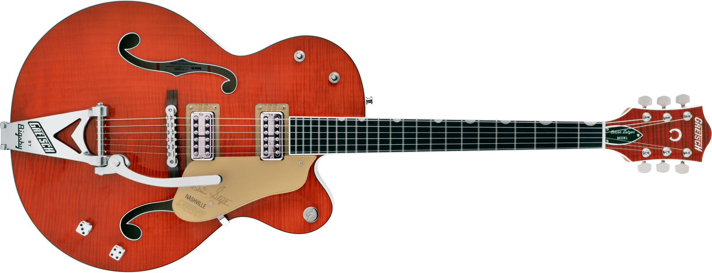

Gretsch 6120
G6120TFM Brian Setzer Signature Nashville® Hollow Body with Bigsby® and Flame Maple

G6120T-59 Vintage Select Edition '59 Chet Atkins® Hollow Body with Bigsby® revisits this historic model. A pair of the ever popular TV Jones® Classic pickups creates high-quality tone with plenty of dynamics and articulation on tap. Traditional Gretsch controls, including dedicated volume controls for both the neck and bridge pickups, master volume and the classic three-position tone switch, allow you to blend and shape the pickups’ sound, creating countless tonal variations. The new Gretsch “Squeezebox” paper-in-oil capacitors provide an incredibly silky high end. The vintage “V”-shaped maple neck bears a 12”-radius ebony fingerboard with 22 frets for a classic playing experience that works with all musical styles. 1959 trestle bracing connects the top and back of this guitar for authentic, snappy vintage tone. A pinned “rocking” bar bridge reacts in tandem with the Bigsby B6CVT vibrato tailpiece for stable tuning while the vintage-style genuine bone nut lets the strings slide freely without binding in the slots.